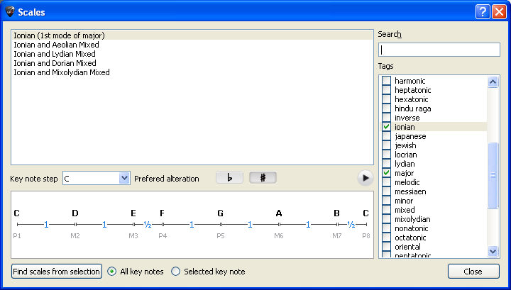
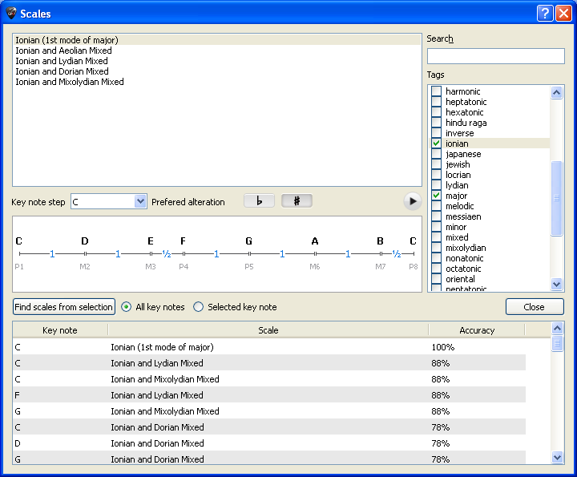

Die Tonleitern
Mit Hilfe des Tonleitern-Werkzeug kõnnen Sie eine große Anzahl verschiedenster
Tonleitern in jeder beliebigen Tonart anhõren.
über die Menüleiste Hilfsmittel > Tonleitern rufen Sie das Tonleitern-Werkzeug
auf. Sie kõnnen es ebenso õffnen, indem Sie den oberen rechten Auswahlknopf
Tonleitern auf der Symbolleiste für das Griffbrett,
oder der Klaviertastatur, benutzen.
Der Ansichtmodus der Klaviertastatur und des
Griffbretts wird automatisch in
Sehen [Anschlag + Tonleiter] positioniert.
Sie kõnnen die Einstellung für das Griffbrett Ihren Wünschen anpassen,
um für jede Note den Notenname, die Intervallbezeichnung und die Funktionsstufe
zu sehen.

Guitar Pro schlägt mehr als 1000 verschiedenen Tonleitern vor. Um eine
Tonleiter anzuzeigen, kõnnen Sie entweder Schlüsselwõrter auswählen um
die gewünschte Tonleiter zu finden, oder die Suchmaschine benutzen mit
einem Schlüsselwort.
Die Tonleiter wird dann in der gewünschten Tonart angezeigt. Um sie
anzuspielen, brauchen Sie bloß die Mausüber den Tonnamen der ersten Liste
zu ziehen und es erscheint ein Auswahlknopf, auf den Sie klicken kõnnen,
um den Ton zu hõren. Guitar Pro zeigt Ihnen auch den Aufbau der Tonleiter,
mit den einzelnen Intervallen und der Anzahl der Halbtonschritte zwischen
den einzelnen Noten an.
Wie jedes der Hilfsmittel in Guitar Pro, passt sich die Anzeige der
Noten auf dem Griffbrett der entsprechenden Stimmung
der jeweiligen Spur, an.
Das Herausfinden der in der Spur benutzten Tonleiter
Durch Anwahl des Tonleiter finden Auswahlknopfes õffnet sich die Suchfunktion:

Geben sie einen Taktbereich an, den Sie analysieren mõchten und klicken
sie dann auf Analysieren. Guitar Pro zeigt Ihnen nun alle mõgliche Tonleitern
an, die zu den Tõnen passen würden. Die Ausgabeliste ist nach diesen Abweichungen
aufsteigend sortiert.
 Hinweis:
Falls die Suche ein sehr schlechtes,übereinstimmendes Ergebnis liefert,
kõnnte die Partitur einen Wechsel in der Tonalität enthalten. Finden Sie
diese Stelle durch Ihr Gehõr, und begrenzen Sie den zu analysierenden
Taktbereich auf einen Abschnitt ohne Tonalitätswechsel.
Hinweis:
Falls die Suche ein sehr schlechtes,übereinstimmendes Ergebnis liefert,
kõnnte die Partitur einen Wechsel in der Tonalität enthalten. Finden Sie
diese Stelle durch Ihr Gehõr, und begrenzen Sie den zu analysierenden
Taktbereich auf einen Abschnitt ohne Tonalitätswechsel.
Hinweis:
Mit Guitar Pro kõnnen Sie nicht direkt eine Tonleiter aus dem Tonleitern-Dialog
in die Spur einer Partiturübertragen. Dennoch durch Anzeige der Tonleiter
auf dem Griffbrett, ist es im Anschluss sehr leicht durch einen Klick
die entsprechenden Noten auf die Tabulatur zuübertragen. Dabei kõnnen
Sie mit der Maus auch einen Klick mit der rechten Maustaste machen. Dies
bewegt den Eingabezeiger nach dem Hinzufügen des Tones gleichzeitig einen
Anschlag weiter. Das Einfügen geht damit sehr schnell.